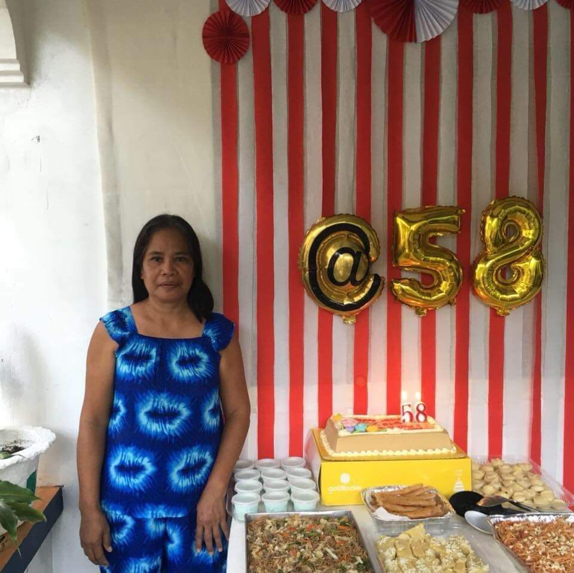

"A real Superhero"
She’s not just my grandmother. She’s my second parent, my friend, and my superhero..

"Josephine Nieves" — my Lola
My Lola, Josephine Nieves, has always been a source of love, wisdom, and courage. From my early childhood to today, she has shown me the real superhero, not from cartoon or anthing. A real superhero is someone who cares for you, protects you, and loves you unconditionally. She fed me my favorite food "Chicken Cury" and she always help me when i need some help like how to cook or how to wash clothe. Even though she yell at me when i did something bad, i know for fact that im always is baby even im becoming a adult. Im thankful to be her Apo and baby. We should always take care our Lola.
More About My Lola
- Favorite Food She Cook: Chicken Cury and Adobo
- Favorite Hobby: Gardening and watching teleseries
- Personality: Strict but kind-hearted, patient, and strong-willed
- Alway line: “Saanmo laeng nga aramiden ti dakes, ilintegmo ti biagmo.”